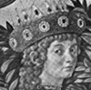
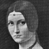
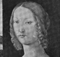

Alison Booth
Hare, Christopher. [pseud. of Marian Andrews] The Most Illustrious Ladies of the Italian Renaissance. London and New York: Harper; Scribner 1904; Scribner, 1905; Harper, 1907; 1911. Williamstown, Mass: Corner House, 1972.
British Library lists 20 titles by Christopher Hare, published by various houses in London 1897-1917. Works include historical fiction, biographical histories of medieval and Renaissance Europe, two biographies of individual women, and Men and Women of the Italian Reformation (London: Stanley, 1914).
TOC: Noble Ladies of the House of Medici: Lucrezia Tornabuoni, Wife of Piero dei Medici; Clarice Degli Orsini, Wife of Lorenzo dei Medici.; Two Queens of Naples, Princesses of the House of Anjou: Giovanna I; Giovanna II.; A Group of Lombard Princesses: Beatrice d’Este, Duchess of Milan; Bianca Maria Sforza, Wife of the Emperor Maximilian; Isabella d’Este, Marchesa of Mantua; Renee of France, Duchess of Ferrara; Caterina Cornaro, Queen of Cyprus; Bianca Capello, Grand Duchess of Florence.; Great Ladies of Rome and Romagna: Caterina Sforza, Countess of Forli; Lucrezia Borgia, Duchess of Ferrara; Vittoria Colonna, Marchesa of Pescara; Elisabetta Gonzaga, Duchess of Urbino.
-
Lorenzo de Medici
-
 Beatrice D'Este, Duchess of Milan
Beatrice D'Este, Duchess of Milan -
Lucrezia Crivelli
-
 Isabella D'Este, Marchesa of Mantua
Isabella D'Este, Marchesa of Mantua -
 Bianca Capello, Grand Duchess of Tuscany
Bianca Capello, Grand Duchess of Tuscany -
Caterina Sforza, Countess of Forli
-
Count Baldassare Castiglione
Search OCLC WorldCat for this title.
Search Google Books for this title.